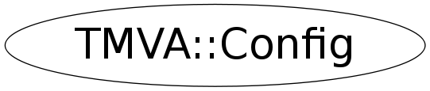

Function Members (Methods)
public:
| static TClass* | Class() |
| TMVA::Config | Config(const TMVA::Config&) |
| static void | DestroyInstance() |
| Bool_t | DrawProgressBar() const |
| TMVA::Config::IONames& | GetIONames() |
| TMVA::Config::VariablePlotting& | GetVariablePlotting() |
| static TMVA::Config& | Instance() |
| virtual TClass* | IsA() const |
| Bool_t | IsSilent() const |
| TMVA::Config& | operator=(const TMVA::Config&) |
| void | SetDrawProgressBar(Bool_t d) |
| void | SetSilent(Bool_t s) |
| void | SetUseColor(Bool_t uc) |
| void | SetWriteOptionsReference(Bool_t w) |
| virtual void | ShowMembers(TMemberInspector& insp) |
| virtual void | Streamer(TBuffer& b) |
| void | StreamerNVirtual(TBuffer& b) |
| Bool_t | UseColor() const |
| Bool_t | WriteOptionsReference() const |
Data Members
public:
| TMVA::Config::IONames | fIONames | Customisable weight file properties |
| TMVA::Config::VariablePlotting | fVariablePlotting | Customisable plotting properties |
private:
| Bool_t | fDrawProgressBar | draw progress bar to indicate training evolution |
| TMVA::MsgLogger* | fLogger | message logger |
| Bool_t | fSilent | no output at all |
| Bool_t | fUseColoredConsole | coloured standard output |
| Bool_t | fWriteOptionsReference | if set true: Configurable objects write file with option reference |
| static TMVA::Config* | fgConfigPtr |
Class Charts
{kind=link}
{kind=link}
{kind=link}
{kind=link}
